Muriel is the seventh hero that you will unlock at stage 275. Her attack may be low but she is the fastest hero in the game. She also has the strongest single-hit ability.
Abilities
| Quick Strike | |
|---|---|
| Hit your target for 110% of your damage and add a combo point. Cost: 30 Energy. | |
{kind=link}
| Rally | |
|---|---|
| Increase your Critical Chance by 20% and the attack speed of your party by 15% for 6 seconds per combo point. Consumes all your combo points. Cost: 45 Energy. | |
{kind=link}
| Backstab | |
|---|---|
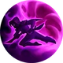 |
Attack your target with a Backstab that causes 85% of your damage per combo point. Target hit by Backstab will be stunned for 1.2 seconds per combo point consumed. Consumes all your combo points. 7 seconds cooldown. Cost: 70 Energy. |
{kind=link}
Gear
| Weapon | Chest | Boots | Ring | |
|---|---|---|---|---|
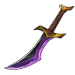 |
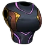 |
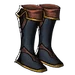 |
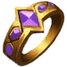 | |
| Wrist | Shoulder | Belt | Relic | |
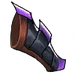 |
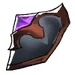 |
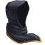 | ||
| Ankh | Rune | Idol | ||
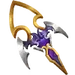 |
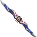 |
|||
| Talisman | Necklace | Trinket | ||
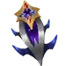 |
{kind=link}
{kind=link}
{kind=link}
{kind=link}
{kind=link}
{kind=link}
{kind=link}
{kind=link}
{kind=link}
{kind=link}
{kind=link}
{kind=link}
{kind=link}
{kind=link}
Biography
The Invisible
{kind=link}
{kind=link}
The invisible
Muriel was born into a poor family, in a community of farmers near the waters between Irongard and the Elven realm of Celenis. The magic of the Elves kept the incredible climate within their own borders, leaving Muriel's community to barely survive off small crops and critter hunting. Between bandit raids, droughts and misfortune, her parents were forced to sell her as a slave to a noble but cruel house in the Elven city of Talamer.
Her new master, Malakar, ran a strict and merciless household, and when she was not being punished, Muriel thought only of escape. For 2 long years, she was trapped, silently suffering and slowly gaining the trust of Malakar. Unknown to him, a life of slavery only trained Muriel to move unheard and in the shadows, keeping out of sight of guests and the Elven attendants; Humans to them made good slaves, but were thought of as lower creatures. A small but cunning girl, Muriel understood that if she could not fight or buy her way out, she would have to do so by being unseen. The chance finally came to her at the Lunar Year festival. Under the sounds of magical Elven fireworks, song and dance, her master and his guests drunk on Moonwine, she slipped away in the darkness of the manor's service tunnels and ran as far as she could.
For weeks, she wandered into different Celenis settlements, stealing to eat and sneaking by guards to sleep in barns. This difficult life was the cost of her freedom, but to her it was worth it; for all the dream-like magic of the Elves, living with them was a nightmare. As the years passed, Muriel grew from the shadows' slave to their master. She learned many tricks - stealing and hiding in broad daylight, blend into crowds and change her appearance. In Malakar's manor, she learned the art of gossip, the only way to learn news and happenings as a slave; as a woman, she perfected it, learning who to best steal from, or opportunities for someone like her.
Much like learning of Malakar's shameful secrets from other slave girls, she found out about the secretive “Impetus”, a caste of rogues living in the shadows of Irongard's tunnels. The Impetus it was said, were thieves and outcasts that renounced their old life and worked in the darkness in the name of the Light and King, as spies and undercover agents running secret missions behind enemy lines. As soon as she could, Muriel left for Irongard and a new life. Almost immediately after arriving at Irongard, the Impetus took notice of her skills. They taught her the nobility of their work and the tools of their trade. Her natural talent for swiftness and cunning earned her the right to carry the ceremonial dagger as a Silent Sister of the Order. In time, the King knew which of the Impetus to call when he needed someone truly invisible.
The Nurse of Death


{kind=link}
The nurse of death
This skin is unlocked when you complete 300 firestone researches.
Muriel, swapping shadows for scrubs, trained as a nurse in Irongard under the alias “Ratched”. Beloved by patients for her silent, efficient care, she discovered her hospital's doctors were conspiring with orcs, trading meds for gold. Old habits kicked in: one by one, the treacherous doctors “mysteriously disappeared”. Muriel concluded that the best cure wasn't just treating symptoms but eliminating the disease itself. Thus, “The Nurse of Death” was born, scalpel in hand, ready to operate.
The Sanctified Blade


{kind=link}
The sanctified blade
This skin could only be obtained during the March 2026 Decorated Heroes Event.
After leaving the shadows behind, Muriel sought a quiet life within the Sanctum of the Veiled Sisters, a secluded order devoted to protecting Irongard through discipline, service, and secrecy. But peace was short-lived. Raiders struck the border villages, abducting innocents just as her own family had once been taken. The Sisters offered guidance. Muriel chose action. She forged her skills into a new purpose, swearing the Golden Vow, an oath that allowed select Sisters to act unseen where law could not. Her twin gilded blades became the Vow’s instruments - swift, silent, and final. To the Veiled Sisters, she is devotion. To her enemies, she is the last whisper before the dark.
Dialogue
Before unlocking:
- Aurelia: Whats wrong Benedictus? You seem concerned.
- Benedictus: I sense someone has been following us since we left the village.
- Aurelia: Worry not holy man, our blades are ready.
- Benedictus: I'm not worried... the energy I sense is not evil. I wonder why they do not reveal their presence.
- Aurelia: Watch out! Enemies ahead!
After unlocking:
- Muriel: Congratulations heroes, you survived a very tough fight.
- Aurelia: What the ...? How did you appear like that?
- Muriel: Relax, if I wanted you dead, we wouldn't be having this conversation. I am not here to harm you.
- Aurelia: I admit you caught us off guard... but don't push your luck. What do you want from us?
- Muriel: My name is Muriel. My orders were to follow you and see if you were worthy. After seeing you fight, I think you have proven yourself.
- Aurelia: Worthy of what? Ordered by whom?
- Muriel: To offer you my services. You will find out the rest in time.